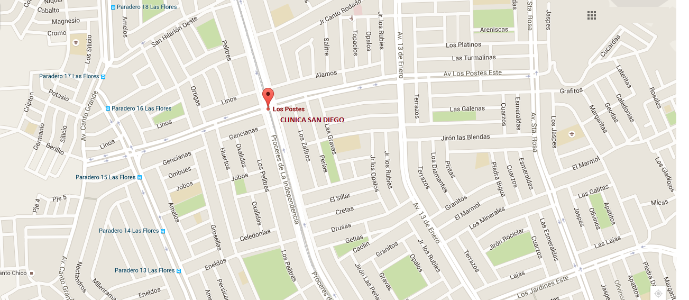

CLINICA
ODONTOLOGIA
TRATAMIENTOS
INFRAESTRUCTURA
CLINICA
PRIMER CONSULTORIO
SEGUNDO CONSULTORIO
SALA DE ESPERA
SALA DE ESTERILIZACION
BIOSEGURIDAD
CASOS CLINICOS
Rehabilitación con ataches en paciente edentulo parcial.
Rehabilitacion con ataches más punte fijo anterior - superior.
Funda de porcelan libre de metal en pieza dental anterior.
Puente fijo cosmético en maxilar superior más blanqueamiento en maxilar inferior.
Realineamiento de Oclusion a plano ideal con puentes en maxilar superior e inferior.
Reconstrucción con resinas fotocurables en incisivos superiores.
Rehabilitación con ataches en paciente edentulo parcial.
Rehabilitacion con ataches más punte fijo anterior - superior.
Funda de porcelan libre de metal en pieza dental anterior.
Puente fijo cosmético en maxilar superior más blanqueamiento en maxilar inferior.
Realineamiento de Oclusion a plano ideal con puentes en maxilar superior e inferior.
Reconstrucción con resinas fotocurables en incisivos superiores.
CONTACTENOS
